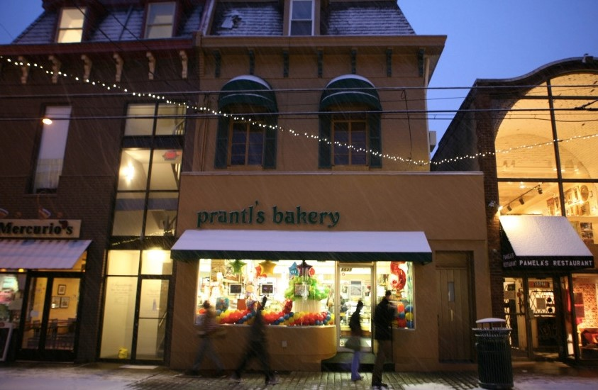

Prantl’s Bakery has been in continuous operation in Shadyside for over 100 years.
Our Burnt Almond Torte and hundreds of sinful sweets have been a tradition for the last 40 years.
Offering 100+ sinful sweets at our two historic Pittsburgh locations.

We cater parties, weddings, and other events!
Custom orders are available via our partnered online store Goldbelly.